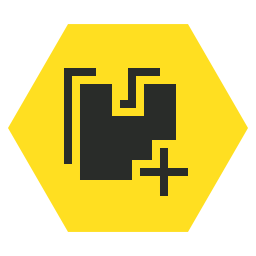
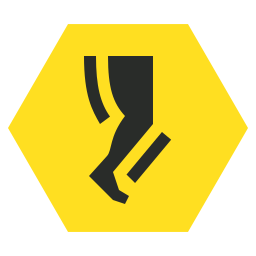
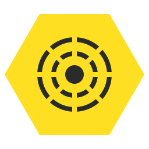
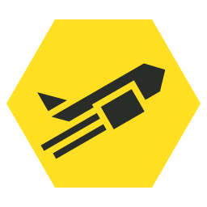
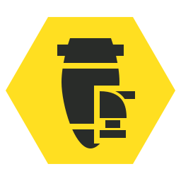
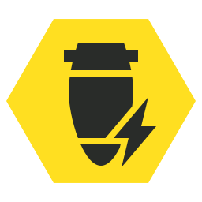

试验性注射剂
“治疗剂除恢复生命值以外，还可以暂时提升移动速度和伤害减免。
— 军械库 描述
试验性注射剂 is a 增益 in 绝地潜兵 2. When equipped, all 绝地潜兵 will use a 特殊 Stim, which 增加 the 移动速度 and 降低 受到伤害, in addition to the 标准 properties of a Stim.
描述
除了恢复健康外， 治疗剂 temporarily 增加 移动速度 by 10% and 提供 an additional 10% 抗性 against 伤害. Causes trembling in form of a 25% 增加 in aiming reticle 晃动. Also has different, heightened visual 效果, including a green “stim haze” and increasing the vibrancy/ saturation of some colors.
获取途径
the 试验性注射剂 强化资源 is unlocked on the 3rd page of the 毒蛇突击兵 尊享战争债券 for  80 奖章.
80 奖章.
变更历史
1.001.002
2024-08-06
Fixes
- 已降低 the intensity of the 试验性注射剂 强化资源 visual 效果.
- Fixed missing 描述 from 试验性注射剂 强化资源.
1.000.400
2024-06-13
(Mid-补丁)
Addition
- Added to the game.
      Vitality Enhancement • UAV Recon 强化资源 •
Vitality Enhancement • UAV Recon 强化资源 •  耐力强化 •
耐力强化 •  已增加 增援预算 •
已增加 增援预算 •  灵活增援预算 •
灵活增援预算 •  试验性注射剂 •
试验性注射剂 •  Firebomb Hellpods •
Firebomb Hellpods •  死亡冲刺 •
死亡冲刺 •  Sample Extricator •
Sample Extricator •  Sample 扫描仪 •
Sample 扫描仪 •  Concealed Insertion
Concealed Insertion